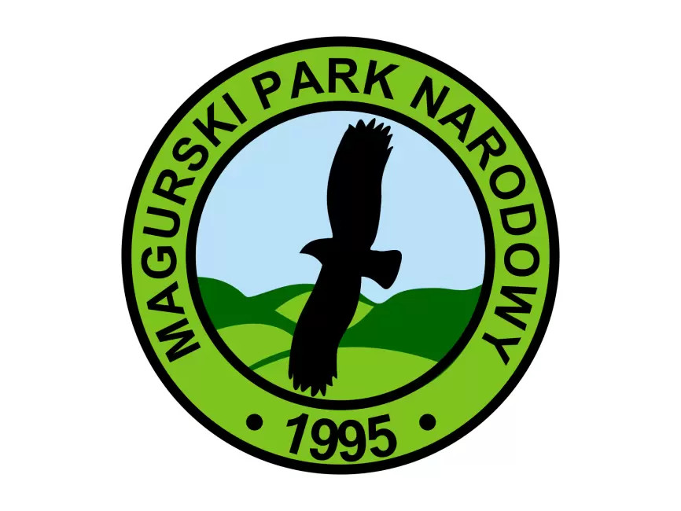
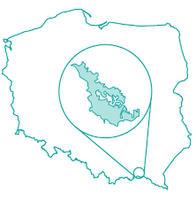

Witaj w Magurskim Parku Narodowym
Magurski Park Narodowy to spokojny fragment Beskidu Niskiego – kraina lasów, łagodnych grzbietów i dolin, w których przyroda wciąż gra pierwsze skrzypce. To dobre miejsce na wędrówki bez tłumów, obserwacje ptaków i odpoczynek w ciszy.
Dojazd i lokalizacja
Magurski Park Narodowy znajduje się w południowo-wschodniej Polsce, w Beskidzie Niskim, na pograniczu województwa podkarpackiego i małopolskiego. Najłatwiej dotrzeć tam samochodem, kierując się do miejscowości Krempna.

Z Krakowa – około 150 km (ok. 2,5–3 godziny) Trasa prowadzi przez Nowy Sącz i dalej drogą w kierunku Gorlic oraz Krempnej.Najbliższe przystanki, z których można dostać się w okolice Magurskiego Parku, to m.in.:
~ Krempna – przystanek autobusowy w centrum miejscowości
~ Nowy Żmigród Rynek – przystanek autobusowy w centrum miejscowości
~ Folusz – przystanek przy wejściu na szlaki turystyczne
~ Jasło Dworzec PKP – stacja kolejowa i przystanek autobusowy w Jasło